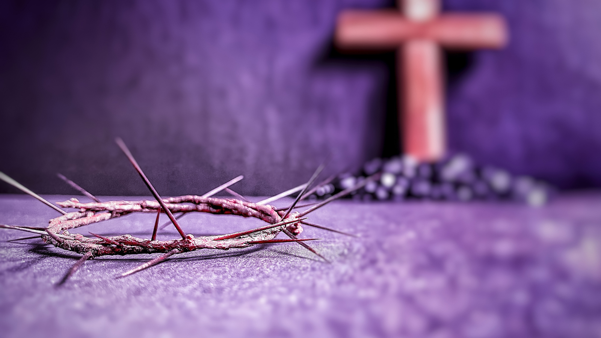

Informações Importantes
- Missa de abertura da Quaresma
- Data: 12 a 19 de abril de 2025
- Horário: 19h:30min
- Local: QUARESMA E SEMANA SANTA
- Livro: Grátis, peça o seu!
Contato
Envie suas dúvidas para o nosso: whatsapp
SEJA UMA LUZ NO GRANDE CONFLITO.

Envie suas dúvidas para o nosso: whatsapp